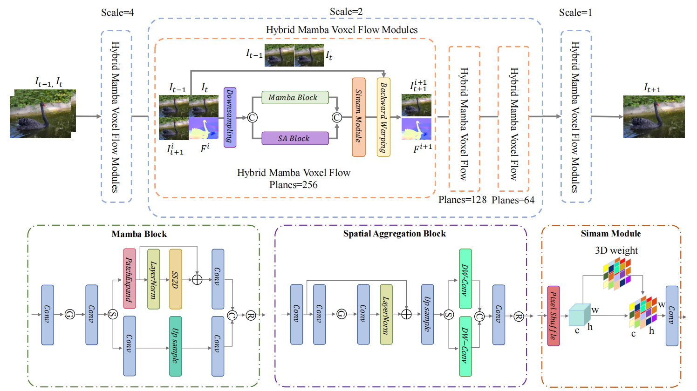

Publications
-

NEW! A Framework with Multi-Scale Hybrid Mamba Voxel Flow for Video Prediction IEEE Transactions on Circuits and Systems for Video Technology. [paper]
-
Normality Prior Guided Multi-Semantic Fusion Network for Unsupervised Image Anomaly Detection IEEE Transactions on Instrumentation and Measurement. [paper]
-

Multi-task Hybrid Knowledge Distillation for Unsupervised Anomaly Detection IEEE Transactions on Industrial Informatics. [paper]
-

Discriminative Feature Learning Framework With Gradient Preference for Anomaly Detection IEEE Transactions on Instrumentation and Measurement. [paper]